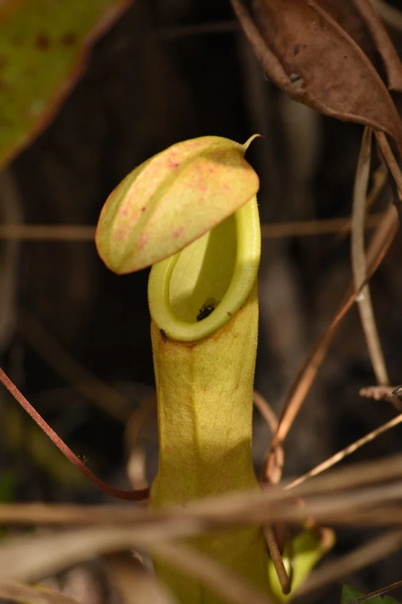

花卉与草本 · 植物界
猪笼草 Nepenthes mirabilis

热带雨林中的食虫植物，叶片末端特化成瓶状捕虫笼，以蜜液和颜色引诱昆虫滑入消化。
- 分类
- 门被子植物门纲双子叶植物纲目石竹目科猪笼草科属猪笼草属
- 栖息环境
- 热带雨林、泥炭沼泽、砂质坡地与云雾林，喜高温高湿和散射光
- 地理分布
- 东南亚、澳大利亚北部及周边热带地区，中国华南有分布
- 保护级别
- 多数种类未评估；部分猪笼草属物种受保护，禁止野外采挖与贸易
物种志
猪笼草是多年生藤本或半灌木，叶分为叶柄、叶片和卷须三部分，卷须末端膨大形成捕虫笼。笼口有光滑的唇，笼盖内侧和唇部会分泌蜜液，吸引蚂蚁、蝇类等昆虫；猎物停在光滑的唇上容易滑落，落入笼内的消化液中，被酶逐步分解吸收。不同种类的猪笼草捕虫笼形态差异很大，有的可容纳数升液体。
猪笼草属广泛分布于东南亚、澳大利亚北部等热带地区，多生于贫瘠的泥炭沼泽、砂质坡地或云雾林。它们喜高温高湿、明亮散射光，根部需要透气基质。由于雨林开发与过度采集，部分种类濒危；常见种类已有大量人工繁殖。栽培时应避免向笼内投喂过多食物，并保持水质洁净。
形态与习性
- 捕虫结构叶片卷须末端形成瓶状捕虫笼
- 引诱方式笼唇与笼盖分泌蜜液，颜色和气味吸引昆虫
- 光照明亮散射光，避免烈日暴晒
- 温度热带种类适温 22–30℃
- 基质水苔、树皮、珍珠岩等透气贫瘠基质
- 水分保持基质湿润，使用低矿物质水
趣味知识
- 猪笼草的捕虫笼由叶片卷须末端发育而来，是变态叶而非花。
- 笼内液体含有消化酶，也能吸引特定昆虫和微生物形成微型生态。
- 一些猪笼草与蚂蚁、树蛙形成共生关系，彼此受益。